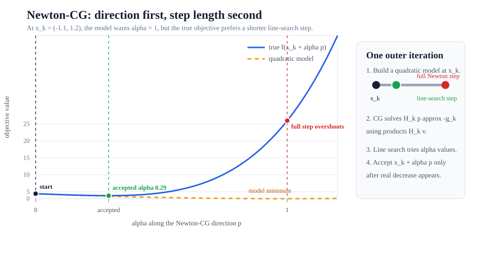

Why Newton-CG Exists
Suppose you want to minimize a smooth function \(f(x)\). The gradient \(g_k=\nabla f(x_k)\) points uphill, so \(-g_k\) points downhill. That is enough to make progress, but not always enough to make efficient progress. On a long, curved valley, steepest descent can spend many steps crossing the valley walls instead of moving along the valley floor.
Newton's method uses more information. It asks: "if the objective near \(x_k\) were a quadratic bowl, where would the bottom of that bowl be?" The local quadratic model is
Here \(p\) is not a point in the original problem. It is a proposed movement away from \(x_k\). The gradient term \(g_k^\mathsf{T}p\) predicts first-order slope. The Hessian term \(\frac{1}{2}p^\mathsf{T}H_kp\) predicts how that slope bends as you move.
The bottom of this quadratic model satisfies \(\nabla m_k(p)=g_k+H_kp=0\), which gives the Newton equation:
A textbook Newton method might solve that system directly. Newton-CG solves it approximately with conjugate gradients. That swap is the whole idea: keep the useful curvature of Newton's method, but replace a dense matrix solve with an iterative solve that only needs products of the form \(H_kv\).
The Algorithm Map
Newton-CG has two nested pieces. The outer loop is a line-search optimizer. The inner loop is a conjugate-gradient solve of the Newton system at the current point.
- Start at \(x_k\), evaluate \(f(x_k)\), the gradient \(g_k\), and a way to apply the Hessian \(H_k\) to vectors.
- Use conjugate gradients to find an approximate solution \(p_k\) to \(H_kp=-g_k\). This gives a curvature-aware search direction.
- Run a line search along that direction to choose a step length \(\alpha_k\).
- Move to \(x_{k+1}=x_k+\alpha_kp_k\), then repeat until the gradient is small or another stopping rule is met.
This separation is important. The inner CG solve proposes a direction based on the local model. The line search checks that the real function actually improves along that direction.

What CG Is Doing Inside
Conjugate gradient is an iterative method for solving linear systems like \(Ap=b\). In Newton-CG, \(A\) is the Hessian \(H_k\) and \(b=-g_k\). The solve is repeated at each outer iteration because the Hessian and gradient change when \(x_k\) changes.
A useful way to read the inner solve is:
At a trial step \(p_j\), the residual is the part of the Newton equation that has not been explained yet:
If \(r_j=0\), the Newton equation is solved exactly. Usually we do not need that. The outer optimizer only needs a direction good enough to reduce the objective, so the inner CG loop can stop early when the residual is small enough, when a maximum inner iteration budget is reached, or when the local curvature looks unsafe.
CG improves the step through search directions that are conjugate with respect to the Hessian:
In ordinary words, once CG has optimized along one direction, later directions are chosen so they do not undo that progress according to the quadratic model. This is why CG can solve a two-dimensional positive-definite quadratic in at most two exact iterations, and why it can make useful partial progress in much larger dimensions.

Why Hessian-Vector Products Matter
The phrase "uses the Hessian" can sound expensive, and a dense Hessian really is expensive. For \(N\) variables, a dense Hessian has \(N^2\) entries. At \(N=100{,}000\), storing it directly is already unrealistic for ordinary hardware.
Newton-CG avoids that storage when you provide a Hessian-vector product function. Instead of asking for all entries of \(H_k\), CG repeatedly asks one question:
That product can often be computed from structure, sparsity, automatic differentiation, or a matrix-free routine. The optimizer receives the curvature information it needs without ever seeing a dense matrix.

hessp.
It is often simpler and more scalable than constructing the full
Hessian.
Direction Is Not Step Length
The Newton equation gives a direction \(p_k\). It does not guarantee that the full step \(x_k+p_k\) is safe for the original nonlinear objective. The quadratic model is only a local approximation, and it can be overconfident far from \(x_k\).
Newton-CG therefore uses a line search:
A basic sufficient-decrease test asks whether the objective dropped enough compared with the directional derivative:
Many implementations also use a curvature condition, giving a Wolfe line search. You do not need to memorize the constants to understand the role: the line search turns a locally promising direction into a globally safer step.
Watch It On Rosenbrock
The Rosenbrock function is a classic optimizer stress test:
The minimum is easy to state, but the valley is narrow and curved. Gradient-only methods can zig-zag across the valley. Newton-CG uses curvature to aim more directly along the valley while the line search prevents reckless full steps.

In more than two dimensions, Rosenbrock has a banded Hessian. That means each variable interacts only with its neighbors, so a Hessian-vector product can be computed without forming a dense matrix. For an interior coordinate, the product has the pattern
Read that formula like code: the \(i\)-th output uses the previous, current, and next entries of \(p\). That local dependency is exactly the kind of structure Newton-CG can exploit.
Use Newton-CG In SciPy
In SciPy, call minimize with
method="Newton-CG". Provide an analytic gradient through
jac. When possible, provide hessp so the
optimizer can apply curvature without materializing the full Hessian.
import numpy as np
from scipy.optimize import check_grad, minimize
def rosen(x):
return np.sum(100.0 * (x[1:] - x[:-1]**2.0)**2.0 + (1 - x[:-1])**2.0)
def rosen_der(x):
der = np.zeros_like(x)
der[1:-1] = (
200 * (x[1:-1] - x[:-2]**2)
- 400 * x[1:-1] * (x[2:] - x[1:-1]**2)
- 2 * (1 - x[1:-1])
)
der[0] = -400 * x[0] * (x[1] - x[0]**2) - 2 * (1 - x[0])
der[-1] = 200 * (x[-1] - x[-2]**2)
return der
def rosen_hess_p(x, p):
hp = np.zeros_like(x)
hp[0] = (1200 * x[0]**2 - 400 * x[1] + 2) * p[0] - 400 * x[0] * p[1]
hp[1:-1] = (
-400 * x[:-2] * p[:-2]
+ (202 + 1200 * x[1:-1]**2 - 400 * x[2:]) * p[1:-1]
- 400 * x[1:-1] * p[2:]
)
hp[-1] = -400 * x[-2] * p[-2] + 200 * p[-1]
return hp
x0 = np.array([1.3, 0.7, 0.8, 1.9, 1.2])
# A small value here is a strong sign that rosen_der matches rosen.
print("gradient check:", check_grad(rosen, rosen_der, x0))
result = minimize(
rosen,
x0,
method="Newton-CG",
jac=rosen_der,
hessp=rosen_hess_p,
options={"xtol": 1e-8, "disp": True},
)
print(result.x)
print(result.fun)
print(result.success, result.message)
The key function is rosen_hess_p(x, p). It does not
return the Hessian. It returns the product \(H(x)p\). That is the
contract Newton-CG needs for its inner CG loop.
When To Use It
| Use Newton-CG when | Prefer another method when |
|---|---|
| You have a smooth unconstrained objective and a reliable gradient. | You only have function values; start with derivative-free methods such as Nelder-Mead or Powell. |
| You can compute Hessian-vector products more cheaply than storing a dense Hessian. | The problem is small and a dense Hessian factorization is cheap; direct Newton or trust-exact may need fewer outer iterations. |
| The variable count is large enough that \(O(N^2)\) Hessian storage is unattractive. | The objective is noisy, nonsmooth, or has unreliable gradients; the curvature model will be hard to trust. |
| You want second-order directions with line-search safeguards. | The Hessian is often indefinite or the line search struggles; trust-ncg or trust-krylov can be more robust. |
The most common Newton-CG disappointments are practical rather than mysterious: wrong gradients, inconsistent Hessian-vector products, badly scaled variables, or expecting the local quadratic model to be reliable far from the current point.
jac matches the objective, then check that
hessp(x, p) matches finite differences of the gradient in
the direction \(p\). A sign error in either one can make a good
algorithm look chaotic.